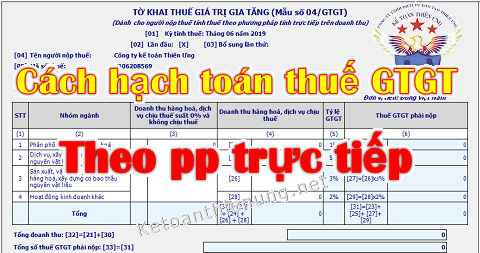

Hướng dẫn cách hạch toán thuế GTGT đầu vào, đầu ra cho các công ty kê khai tính thuế GTGT theo phương pháp trực tiếp
Một vài thông tin tổng quan về các phương pháp kê khai thuế thuế GTGT theo phương pháp trực tiếp thì các bạn xem tại đây nhé:
+ Cách tính thuế GTGT theo phương pháp trực tiếp có bài tập, ví dụ
+ Mẫu hóa đơn bán hàng điện tử theo phương pháp trực tiếp
+ Mẫu hóa đơn bán hàng điện tử theo phương pháp trực tiếp
(Các bạn muốn xem nội dung nào thì các bạn bấm vào dòng đó nhé)
1. Cách hạch toán thuế GTGT đầu vào cho các công ty kê khai tính thuế GTGT theo phương pháp trực tiếp:
Theo quy định tại điều 14 của Luật Thuế giá trị gia tăng số: 48/2024/QH15 có hiệu lực từ ngày 01/7/2025 thì: chỉ có những doanh nghiệp nộp thuế GTGT theo phương pháp khấu trừ thì mới được kê khai khấu trừ thuế GTGT đầu vào
=> Đối với các công ty kê khai tính thuế GTGT theo phương pháp trực tiếp sẽ không được khấu trừ thuế GTGT đầu vào
Theo khoản 16 điều 23 của Theo Nghị định 181/2025/NĐ-CP hướng dẫn Luật Thuế giá trị gia tăng có hiệu lực từ ngày 01/7/2025 thì:
Điều 23. Khấu trừ thuế giá trị gia tăng
16. Đối với số thuế giá trị gia tăng đầu vào không được khấu trừ, cơ sở kinh doanh được tính vào chi phí để tính thuế thu nhập doanh nghiệp hoặc tính vào nguyên giá của tài sản cố định theo quy định của pháp luật về thuế thu nhập doanh nghiệp, trừ số thuế giá trị gia tăng của hàng hóa, dịch vụ mua vào từng lần có giá trị từ 05 triệu đồng trở lên không có chứng từ thanh toán không dùng tiền mặt.
Ví dụ 1: Công ty Kế Toán Diệu Tâm là doanh nghiệp áp dụng phương pháp kê khai thuế GTGT theo PP trực tiếp
=> Khi đi mua hàng hóa của công ty Bảo An là DN kê khai thuế GTGT theo pp khấu trừ
=> Nhận được hóa đơn mua hàng là hóa đơn GTGT, trên hóa đơn có thông tin như sau:
+ Giá trị hàng hóa là 15.000.000
+ Tiền thuế GTGT: 1.500.000.
+ Tổng tiền phải thanh toán: 16.500.000
+ Tiền thuế GTGT: 1.500.000.
+ Tổng tiền phải thanh toán: 16.500.000
Khi nhận hóa đơn, nhận hàng rồi tiến hàng nhập kho hàng hóa thì công ty Kế Toán Diệu Tâm sẽ hạch toán như sau:
Nợ TK 156: 16.500.000 (Tổng tiền phải thanh toán)
Có TK 112: 16.500.000 (Do đã thanh toán bằng tiền gửi ngân hàng).
Có TK 112: 16.500.000 (Do đã thanh toán bằng tiền gửi ngân hàng).
Ví dụ 2: Công ty Kế Toán Diệu Tâm là doanh nghiệp áp dụng phương pháp kê khai thuế GTGT theo PP trực tiếp
=> Khi đi mua dịch vụ của công ty Minh Long là DN kê khai thuế GTGT theo pp khấu trừ
=> Nhận được hóa đơn mua dịch vụ là hóa đơn GTGT, trên hóa đơn có thông tin như sau:
+ Dịch vụ ăn uống (Lẩu gà) là 600.000đ
+ Tiền thuế GTGT: 480.000đ
+ Tổng tiền phải thanh toán: 648.000đ
+ Tiền thuế GTGT: 480.000đ
+ Tổng tiền phải thanh toán: 648.000đ
Khi nhận hóa đơn, thanh toán tiền dịch bằng tiền mặt thì công ty Kế Toán Diệu Tâm sẽ hạch toán như sau:
Nợ TK 642: 648.000 (Tổng tiền phải thanh toán)
Có TK 111: 648.000 (Do đã thanh toán bằng tiền mặt).
Có TK 111: 648.000 (Do đã thanh toán bằng tiền mặt).
Ví dụ 3: Công ty Kế Toán Diệu Tâm là doanh nghiệp áp dụng phương pháp kê khai thuế GTGT theo PP trực tiếp
=> Khi đi mua công cụ dụng cụ của công ty Bình Minh là DN cũng kê khai thuế GTGT theo PP trực tiếp
=> Nhận được hóa đơn mua CCDC là hóa đơn bán hàng, trên hóa đơn có thông tin như sau:
+ Laptop acer aspire 7 là 7.000.000đ
+ Tổng tiền phải thanh toán: 7.000.000đ
Khi nhận hóa đơn, nhận hàng rồi tiến hàng nhập kho CCDC thì công ty Kế Toán Diệu Tâm sẽ hạch toán như sau:
Nợ TK 642: 7.000.000 (Tổng tiền phải thanh toán)
Có TK 111: 7.000.000 (Do đã thanh toán bằng tiền gửi ngân hàng).
Chốt lại: Đối với các công ty kê khai tính thuế GTGT theo phương pháp trực tiếp thì sẽ không được khấu trừ thuế GTGT đầu vào
Có TK 111: 7.000.000 (Do đã thanh toán bằng tiền gửi ngân hàng).
Vì vậy: nếu khi đi mua hàng hóa, dịch vụ mà nhận được hóa đơn là hóa đơn GTGT => Trên hóa đơn mua vào này có số tiền thuế GTGT thì:
+ Không hạch toán số tiền thuế GTGT này vào tài khoản 133 - Thuế GTGT được khấu trừ
+ Toàn bộ số tiền thuế GTGT đầu vào không được khấu trừ này sẽ hạch toán vào giá trị của hàng mua (Hạch toán vào tài khoản: 151/152/153/154/155/156/211/242/...)
(Mua cái gì thì hạch toán vào TK đó)
Lưu ý: Đối với trường hợp doanh nghiệp thực hiện chuyển đổi phương pháp kê khai tính thuế GTGT:
Theo khoản 10 và khoản 11 điều 23 của Theo Nghị định 181/2025/NĐ-CP hướng dẫn Luật Thuế giá trị gia tăng có hiệu lực từ ngày 01/7/2025 thì:
Điều 23. Khấu trừ thuế giá trị gia tăng
10. Cơ sở kinh doanh nộp thuế giá trị gia tăng theo phương pháp tính trực tiếp khi chuyển sang nộp thuế theo phương pháp khấu trừ thuế được khấu trừ thuế giá trị gia tăng của hàng hóa, dịch vụ mua vào phát sinh kể từ kỳ đầu tiên kê khai, nộp thuế theo phương pháp khấu trừ thuế.
11. Cơ sở kinh doanh nộp thuế giá trị gia tăng theo phương pháp khấu trừ thuế khi chuyển sang nộp thuế theo phương pháp tính trực tiếp được tính số thuế giá trị gia tăng của hàng hóa, dịch vụ mua vào phát sinh trong thời gian nộp thuế theo phương pháp khấu trừ thuế mà chưa khấu trừ hết tại kỳ tính thuế cuối cùng trước khi chuyển đổi phương pháp tính thuế vào chi phí để tính thuế thu nhập doanh nghiệp hoặc được tính vào nguyên giá của tài sản cố định theo quy định của pháp luật về thuế thu nhập doanh nghiệp, trừ số thuế giá trị gia tăng của hàng hóa, dịch vụ mua vào từng lần có giá trị từ 05 triệu đồng trở lên không có chứng từ thanh toán không dùng tiền mặt.
------------------------------------------------------------
2. Cách hạch toán thuế GTGT đầu ra cho các công ty kê khai tính thuế GTGT theo phương pháp trực tiếp:Đối với các doanh nghiệp áp dụng chế độ kế toán theo Thông tư 200 thì: thực hiện theo hướng dẫn tại Điều 52 Thông tư 200/2014/TT-BTC về Tài khoản 333 – Thuế và các khoản phải nộp nhà nước như sau:
1. Nguyên tắc kế toán
c. Các khoản thuế gián thu như thuế GTGT (kể cả theo phương pháp khấu trừ hay phương pháp trực tiếp), thuế tiêu thụ đặc biệt, thuế xuất khẩu, thuế bảo vệ môi trường và các loại thuế gián thu khác về bản chất là khoản thu hộ bên thứ ba. Vì vậy các khoản thuế gián thu được loại trừ ra khỏi số liệu về doanh thu gộp trên Báo cáo tài chính hoặc các báo cáo khác.
Doanh nghiệp có thể lựa chọn việc ghi nhận doanh thu và số thuế gián thu phải nộp trên sổ kế toán bằng một trong 2 phương pháp:
- Tách và ghi nhận riêng số thuế gián thu phải nộp (kể cả thuế GTGT phải nộp theo phương pháp trực tiếp) ngay tại thời điểm ghi nhận doanh thu. Theo phương pháp này doanh thu ghi trên sổ kế toán không bao gồm số thuế gián thu phải nộp, phù hợp với số liệu về doanh thu gộp trên Báo cáo tài chính và phản ánh đúng bản chất giao dịch;
- Ghi nhận số thuế gián thu phải nộp bằng cách ghi giảm số doanh thu đã ghi chép trên sổ kế toán. Theo phương pháp này, định kỳ mới ghi giảm doanh thu đối với số thuế gián thu phải nộp, số liệu về doanh thu trên sổ kế toán có sự khác biệt so với doanh thu gộp trên Báo cáo tài chính.
Trong mọi trường hợp, chỉ tiêu “Doanh thu bán hàng, cung cấp dịch vụ” và chỉ tiêu “Các khoản giảm trừ doanh thu” của báo cáo kết quả hoạt động kinh doanh đều không bao gồm các khoản thuế gián thu phải nộp.
2. Tài khoản sử dụng:
Tài khoản 333 - Thuế và các khoản phải nộp Nhà nước, có 9 tài khoản cấp 2:
- Tài khoản 3331 - Thuế giá trị gia tăng phải nộp: Phản ánh số thuế GTGT đầu ra, số thuế GTGT của hàng nhập khẩu phải nộp, số thuế GTGT đã được khấu trừ, số thuế GTGT đã nộp và còn phải nộp vào Ngân sách Nhà nước.
Tài khoản 3331 có 2 tài khoản cấp 3:
+ Tài khoản 33311 - Thuế giá trị gia tăng đầu ra: Dùng để phản ánh số thuế GTGT đầu ra, số thuế GTGT đầu vào đã khấu trừ, số thuế GTGT của hàng bán bị trả lại, bị giảm giá, số thuế GTGT phải nộp, đã nộp, còn phải nộp của sản phẩm, hàng hoá, dịch vụ tiêu thụ trong kỳ.
+ Tài khoản 33312 - Thuế GTGT hàng nhập khẩu: Dùng để phản ánh số thuế GTGT của hàng nhập khẩu phải nộp, đã nộp, còn phải nộp vào Ngân sách Nhà nước.
3. Cách hạch toán thuế GTGT đầu ra phải nộp theo phương pháp trực tiếp
Kế toán được lựa chọn một trong 2 phương pháp ghi sổ sau:
- Phương pháp 1: Tách riêng ngay số thuế GTGT phải nộp khi xuất hóa đơn, thực hiện hạch toán như sau:
Kế toán phản ánh doanh thu, thu nhập theo giá bán chưa có thuế GTGT, thuế GTGT phải nộp được tách riêng tại thời điểm xuất hóa đơn, ghi:
Nợ các TK 111, 112, 131 (tổng giá thanh toán)
Có các TK 511, 515, 711 (giá chưa có thuế GTGT)
Có TK 3331 - Thuế GTGT phải nộp (33311).
- Phương pháp 2: Ghi nhận doanh thu bao gồm cả thuế GTGT phải nộp theo phương pháp trực tiếp, định kỳ khi xác định số thuế GTGT phải nộp kế toán ghi giảm doanh thu, thu nhập tương ứng:
Nợ các TK 511, 515, 711
Có TK 3331 - Thuế GTGT phải nộp (33311).
Khi nộp thuế GTGT vào Ngân sách Nhà nước, ghi:
Nợ TK 3331 - Thuế GTGT phải nộp
Có các TK 111, 112.
Đối với các doanh nghiệp áp dụng chế độ kế toán theo Thông tư 133 thì: thực hiện theo hướng dẫn tại Điều 41 Thông tư 133/2016/TT-BTC về Tài khoản 333 – Thuế và các khoản phải nộp nhà nước như sau:
Điều 41. Tài khoản 333 - Thuế và các khoản phải nộp nhà nước
1. Nguyên tắc kế toán
1.1. Tài khoản này dùng để phản ánh quan hệ giữa doanh nghiệp với Nhà nước về các khoản thuế, phí, lệ phí và các khoản khác phải nộp, đã nộp, còn phải nộp vào Ngân sách Nhà nước trong kỳ kế toán năm.
1.2. Doanh nghiệp chủ động tính, xác định và kê khai số thuế, phí, lệ phí và các khoản phải nộp cho Nhà nước theo luật định; Kịp thời phản ánh vào sổ kế toán số thuế phải nộp, đã nộp, được khấu trừ, được hoàn...
1.3. Các khoản thuế gián thu như thuế GTGT (kể cả theo phương pháp khấu trừ hay phương pháp trực tiếp), thuế tiêu thụ đặc biệt, thuế xuất khẩu, thuế bảo vệ môi trường và các loại thuế gián thu khác về bản chất là khoản thu hộ bên thứ ba. Vì vậy các khoản thuế gián thu được loại trừ ra khỏi số liệu về doanh thu gộp trên Báo cáo tài chính hoặc các báo cáo khác.
Doanh nghiệp có thể lựa chọn việc ghi nhận doanh thu và số thuế gián thu phải nộp trên sổ kế toán bằng một trong 2 phương pháp:
- Tách và ghi nhận riêng số thuế gián thu phải nộp (kể cả thuế GTGT phải nộp theo phương pháp trực tiếp) ngay tại thời điểm ghi nhận doanh thu. Theo phương pháp này doanh thu ghi trên sổ kế toán không bao gồm số thuế gián thu phải nộp, phù hợp với số liệu về doanh thu gộp trên Báo cáo tài chính và phản ánh đúng bản chất giao dịch;
- Ghi nhận số thuế gián thu phải nộp bằng cách ghi giảm số doanh thu đã ghi chép trên sổ kế toán. Theo phương pháp này, định kỳ mới ghi giảm doanh thu đối với số thuế gián thu phải nộp, số liệu về doanh thu trên sổ kế toán có sự khác biệt so với doanh thu gộp trên Báo cáo tài chính.
Trong mọi trường hợp, chỉ tiêu “Doanh thu bán hàng và cung cấp dịch vụ” và chỉ tiêu “Các khoản giảm trừ doanh thu” của báo cáo kết quả hoạt động kinh doanh đều không bao gồm các khoản thuế gián thu phải nộp.
2. Kết cấu và nội dung phản ánh của Tài khoản 333 - Thuế và các khoản phải nộp nhà nước
Bên Nợ:
- Số thuế GTGT đã được khấu trừ trong kỳ;
- Số thuế, phí, lệ phí và các khoản khác đã nộp vào Ngân sách Nhà nước;
- Số thuế được giảm trừ vào số thuế phải nộp;
- Số thuế GTGT của hàng bán bị trả lại, bị giảm giá.
Bên Có:
- Số thuế GTGT đầu ra và số thuế GTGT hàng nhập khẩu phải nộp;
- Số thuế, phí, lệ phí và các khoản khác phải nộp vào Ngân sách Nhà nước.
Số dư bên Có:
Số thuế, phí, lệ phí và các khoản khác còn phải nộp vào Ngân sách Nhà nước.
TK 333 có thể có số dư bên Nợ: Số dư bên Nợ (nếu có) của TK 333 phản ánh số thuế và các khoản đã nộp lớn hơn số thuế và các khoản phải nộp cho Nhà nước, hoặc có thể phản ánh số thuế đã nộp được xét miễn, giảm hoặc cho thoái thu nhưng chưa thực hiện việc thoái thu.
Tài khoản 333 - Thuế và các khoản phải nộp Nhà nước, có 9 tài khoản cấp 2:
- Tài khoản 3331 - Thuế giá trị gia tăng phải nộp: Phản ánh số thuế GTGT đầu ra, số thuế GTGT của hàng nhập khẩu phải nộp, số thuế GTGT đã được khấu trừ, số thuế GTGT đã nộp và còn phải nộp vào Ngân sách Nhà nước.
Tài khoản 3331 có 2 tài khoản cấp 3:
+ Tài khoản 33311 - Thuế giá trị gia tăng đầu ra: Dùng để phản ánh số thuế GTGT đầu ra, số thuế GTGT đầu vào đã khấu trừ, số thuế GTGT của hàng bán bị trả lại, bị giảm giá, số thuế GTGT phải nộp, đã nộp, còn phải nộp của sản phẩm, hàng hóa, dịch vụ tiêu thụ trong kỳ.
+ Tài khoản 33312 - Thuế GTGT hàng nhập khẩu: Dùng để phản ánh số thuế GTGT của hàng nhập khẩu phải nộp, đã nộp, còn phải nộp vào Ngân sách Nhà nước.
--------------------------------------------------------------------------
=> Cách kê khai thuế GTGT theo phương pháp trực tiếp; Thuế suất thuế GTGT theo pp trực tiếp ... Các bạn xem chi tiết tại đây nhé:
Chú ý:
- Doanh nghiệp kê khai thuế GTGT theo phương pháp trực tiếp thì vẫn phải làm sổ sách, Báo cáo tài chính. Lập tờ khai Quyết toán thuế TNDN như Doanh nghiệp kê khai thuế GTGT theo pp khấu trừ.
-> Chỉ khác là DN kê khai theo pp trực tiếp sẽ không có TK 133 - Khấu trừ thuế GTGT đầu vào thôi nhé.
---------------------------------------------------------------------------------------------------------
Kế toán Diệu Tâm xin chúc các bạn thành công!
------------------------------------------------------------------
------------------------------------------------------------------
